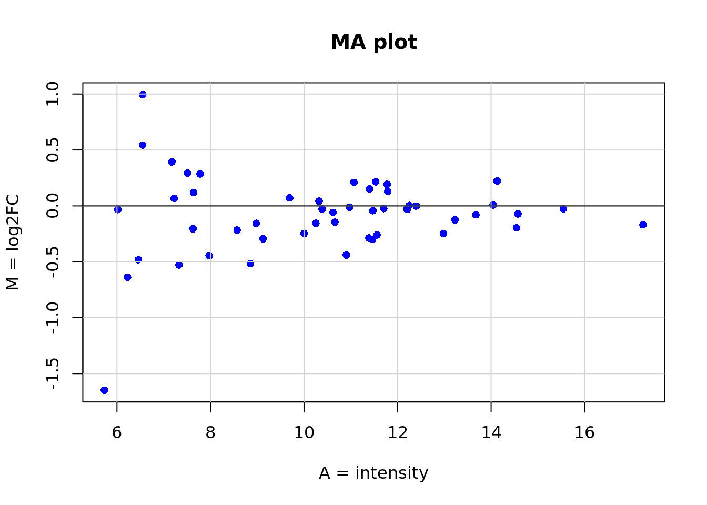
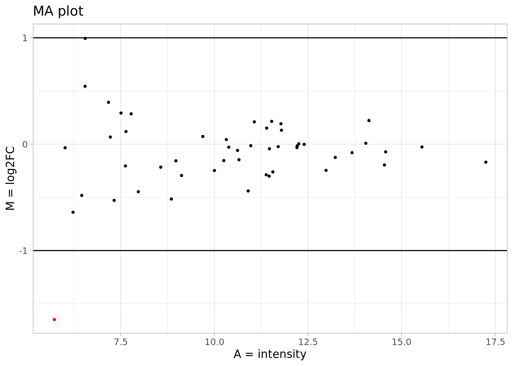

Chapter 12 R de base
plot(x = exprs$A, y = exprs$M, main = "MA plot",
col = "blue", pch = 16, xlab = "A = intensity", ylab = "M = log2FC")
grid(lty = "solid", col = "lightgray")
abline(h = 0) ## ggplot2
library(ggplot2)
g <- ggplot(data = exprs, aes(x = A, y = M)) +
geom_point(aes(A, M, colour = factor(ifelse(abs(M) <= 1, 1,2))), size = 0.8) +
geom_hline(yintercept = c(-1,1)) +
scale_color_manual(values = c("black","red")) +
ggtitle("MA plot") +
labs(y = "M = log2FC", x = "A = intensity") +
theme_light() + theme(legend.position = "none")
g
12.1 Plotly
12.2 echarts
library(echarts4r)
library(dplyr)
exprs %>%
mutate(interst = ifelse(abs(M) <= 1, 1,2))|>
group_by(interst)|>
e_charts(A) |>
e_scatter(M, symbol_size=10) |>
e_legend(FALSE) |>
e_tooltip() |>
e_color(
c("black", "red")
) |>
e_title("MA plot") |>
e_axis_labels(y = "M = log2FC", x = "A = intensity") |>
e_toolbox_feature(feature = "saveAsImage") |>
e_toolbox_feature(feature = "dataZoom") |>
e_toolbox_feature(feature = "dataView")